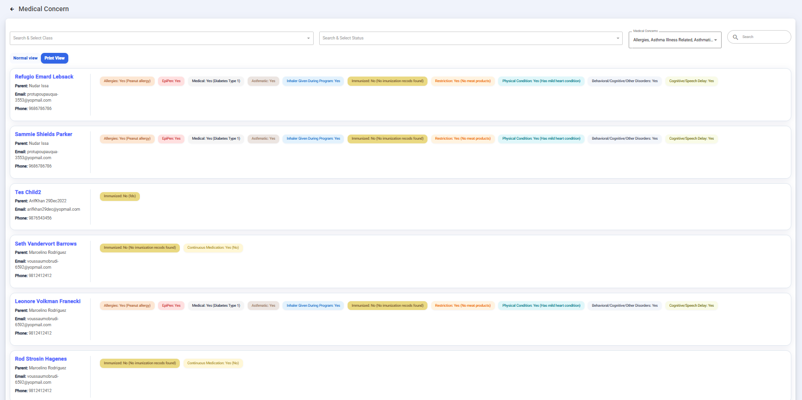
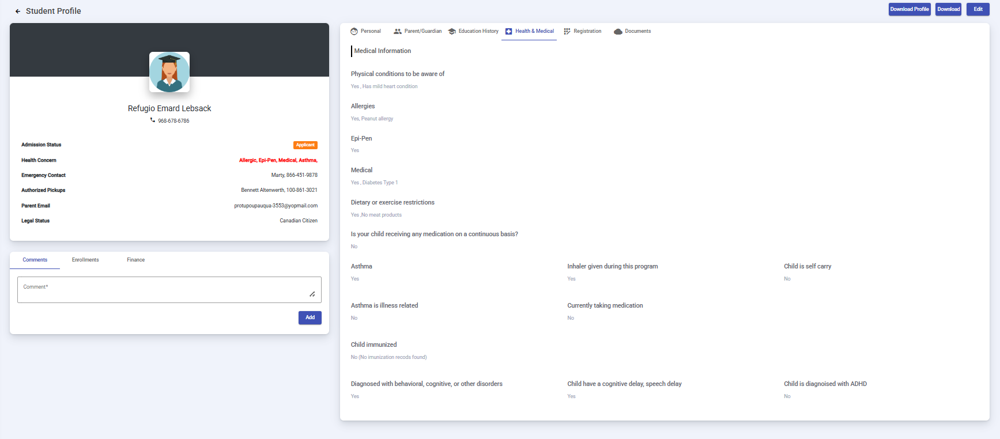

Student Medical Records
Manage and maintain student medical information and health records.
The Medical Concern module in MACSIS provides administrators with a centralized view of student health records, emergency medical requirements, dietary restrictions, and immunization statuses.
Overview & Navigation
To access student medical records, navigate to Students Info > Medical Concern in the sidebar. The interface provides two layout options:
- Normal View: Displays comprehensive student cards with detailed health tags, parent contact info, and email/phone details.
- Print View: Formats the medical data for clean physical or PDF printing (useful for teachers, field trips, or emergency binders).
Print View Layout
The Print View layout transforms the dashboard into a clean, printer-friendly version optimized for physical distribution or emergency folders.

Figure: Printable format of student medical concerns for physical binders.
Filtering and Search Options
Administrators can narrow down student medical records using multiple targeted filters located at the top of the dashboard:
- Class Filter (Search & Select Class): Filter records by specific class configurations (e.g.,
bostonGrade01 bostonsubject01 bostonSection01). - Status Filter (Search & Select Status): Filter students based on their enrollment status within the system, including options such as Applicant, Ready to Enroll, Registered, Enrolled, Suspended, Withdraw, Alumni, Request to Resubmission, and Re-enrolled.
- Medical Concerns Multi-Select: Filter students by specific medical tags and requirements, including allergies, EpiPen needs, asthma/inhalers, diabetes, continuous medication, physical conditions, dietary/product restrictions, developmental delays, and immunization statuses.
- Global Search Bar: Quickly locate individual student records by typing a student name or keyword.
Student Medical Cards
Each entry on the dashboard provides critical emergency and administrative details at a glance:
- Student & Parent Information: Displays the student's name alongside parent contact details, email addresses, and phone numbers.
- Health & Safety Tags: Color-coded badges highlight active medical flags such as peanut allergies, EpiPen needs, daily medications, and immunization warnings so staff can immediately identify necessary precautions.
Adding and Managing Medical Information on Student Profiles
Administrators can review and update detailed health and medical records directly within an individual student's profile:
- Health & Medical Tab: Open a student profile and click on the Health & Medical tab in the top navigation bar to view full medical details.
- Medical Information Categories: The profile tracks physical conditions, allergies, EpiPen requirements, medical history (such as Type 1 Diabetes), dietary/exercise restrictions, continuous medications, asthma specifics, immunization statuses, and developmental or speech delays.
- Editing Profiles: To modify or add medical details, click the Edit button located in the top right corner of the student profile view.

Figure: Health & Medical tab inside the individual student profile.